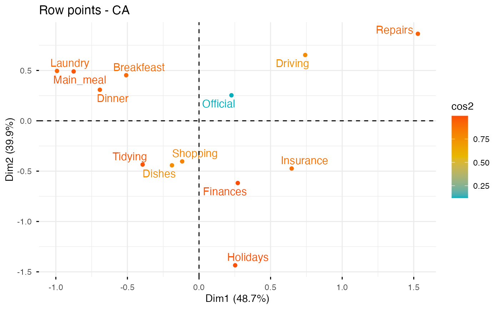
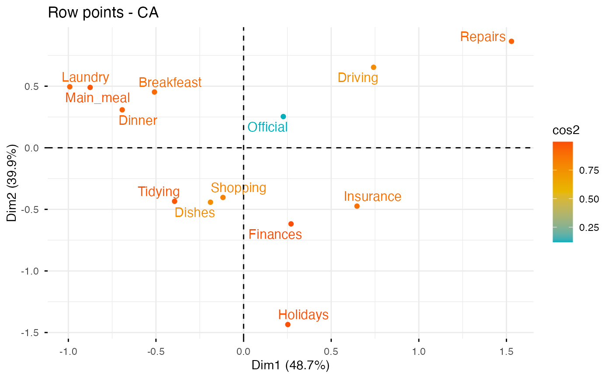

Correspondence analysis (CA) is an extension of Principal Component Analysis (PCA) suited to analyze frequencies formed by two categorical variables. fviz_ca() provides ggplot2-based elegant visualization of CA outputs from the R functions: CA [in FactoMineR], ca [in ca], coa [in ade4], correspondence [in MASS] and expOutput/epCA [in ExPosition]. Read more: Correspondence Analysis
fviz_ca_row(): Graph of row variables
fviz_ca_col(): Graph of column variables
fviz_ca_biplot(): Biplot of row and column variables
fviz_ca(): An alias of fviz_ca_biplot()
fviz_ca_row(
X,
axes = c(1, 2),
geom = c("point", "text"),
geom.row = geom,
shape.row = 19,
col.row = "blue",
alpha.row = 1,
col.row.sup = "darkblue",
select.row = list(name = NULL, cos2 = NULL, contrib = NULL),
map = "symmetric",
repel = FALSE,
...
)
fviz_ca_col(
X,
axes = c(1, 2),
shape.col = 17,
geom = c("point", "text"),
geom.col = geom,
col.col = "red",
col.col.sup = "darkred",
alpha.col = 1,
select.col = list(name = NULL, cos2 = NULL, contrib = NULL),
map = "symmetric",
repel = FALSE,
...
)
fviz_ca_biplot(
X,
axes = c(1, 2),
geom = c("point", "text"),
geom.row = geom,
geom.col = geom,
label = "all",
invisible = "none",
arrows = c(FALSE, FALSE),
repel = FALSE,
title = "CA - Biplot",
...
)
fviz_ca(X, ...)Arguments
- X
an object of class CA [FactoMineR], ca [ca], coa [ade4]; correspondence [MASS] and expOutput/epCA [ExPosition].
- axes
a numeric vector of length 2 specifying the dimensions to be plotted.
- geom
a character specifying the geometry to be used for the graph. Allowed values are the combination of c("point", "arrow", "text"). Use "point" (to show only points); "text" to show only labels; c("point", "text") or c("arrow", "text") to show both types.
- geom.row, geom.col
as
geombut for row and column elements, respectively. Default is geom.row = c("point", "text), geom.col = c("point", "text").- shape.row, shape.col
the point shapes to be used for row/column variables. Default values are 19 for rows and 17 for columns.
- map
character string specifying the map type. Allowed options include: "symmetric", "rowprincipal", "colprincipal", "symbiplot", "rowgab", "colgab", "rowgreen" and "colgreen". See details
- repel
a boolean, whether to use ggrepel to avoid overplotting text labels or not. The old
jitterargument is kept for backward compatibility and is silently converted torepel = TRUE.- ...
Additional arguments.
in fviz_ca_row() and fviz_ca_col(): Additional arguments are passed to the functions fviz() and ggpubrplus::ggpar().
in fviz_ca_biplot() and fviz_ca(): Additional arguments are passed to fviz_ca_row() and fviz_ca_col().
- col.col, col.row
color for column/row points. The default values are "red" and "blue", respectively. Can be a continuous variable or a factor variable. Allowed values include also : "cos2", "contrib", "coord", "x" or "y". In this case, the colors for row/column variables are automatically controlled by their qualities ("cos2"), contributions ("contrib"), coordinates (x^2 + y^2, "coord"), x values("x") or y values("y")
- col.col.sup, col.row.sup
colors for the supplementary column and row points, respectively.
- alpha.col, alpha.row
controls the transparency of colors. The value can variate from 0 (total transparency) to 1 (no transparency). Default value is 1. Allowed values include also : "cos2", "contrib", "coord", "x" or "y" as for the arguments col.col and col.row.
- select.col, select.row
a selection of columns/rows to be drawn. Allowed values are NULL or a list containing the arguments name, cos2 or contrib:
name is a character vector containing column/row names to be drawn
cos2 if cos2 is in [0, 1], ex: 0.6, then columns/rows with a cos2 > 0.6 are drawn. if cos2 > 1, ex: 5, then the top 5 columns/rows with the highest cos2 are drawn.
contrib if contrib > 1, ex: 5, then the top 5 columns/rows with the highest contrib are drawn
- label
a character vector specifying the elements to be labelled. Default value is "all". Allowed values are "none" or the combination of c("row", "row.sup", "col", "col.sup"). Use "col" to label only active column variables; "col.sup" to label only supplementary columns; etc
- invisible
a character value specifying the elements to be hidden on the plot. Default value is "none". Allowed values are the combination of c("row", "row.sup","col", "col.sup").
- arrows
Vector of two logicals specifying if the plot should contain points (FALSE, default) or arrows (TRUE). First value sets the rows and the second value sets the columns.
- title
the title of the graph
Value
a ggplot
Details
The default plot of (M)CA is a "symmetric" plot in which both rows and columns are in principal coordinates. In this situation, it's not possible to interpret the distance between row points and column points. To overcome this problem, the simplest way is to make an asymmetric plot. This means that, the column profiles must be presented in row space or vice-versa. The allowed options for the argument map are:
"rowprincipal" or "colprincipal": asymmetric plots with either rows in principal coordinates and columns in standard coordinates, or vice versa. These plots preserve row metric or column metric respectively.
"symbiplot": Both rows and columns are scaled to have variances equal to the singular values (square roots of eigenvalues), which gives a symmetric biplot but does not preserve row or column metrics.
"rowgab" or "colgab": Asymmetric maps, proposed by Gabriel & Odoroff (1990), with rows (respectively, columns) in principal coordinates and columns (respectively, rows) in standard coordinates multiplied by the mass of the corresponding point.
"rowgreen" or "colgreen": The so-called contribution biplots showing visually the most contributing points (Greenacre 2006b). These are similar to "rowgab" and "colgab" except that the points in standard coordinates are multiplied by the square root of the corresponding masses, giving reconstructions of the standardized residuals.
References
http://www.sthda.com
Examples
# Correspondence Analysis
# ++++++++++++++++++++++++++++++
# Install and load FactoMineR to compute CA
# install.packages("FactoMineR")
library("FactoMineR")
data(housetasks)
head(housetasks)
#> Wife Alternating Husband Jointly
#> Laundry 156 14 2 4
#> Main_meal 124 20 5 4
#> Dinner 77 11 7 13
#> Breakfeast 82 36 15 7
#> Tidying 53 11 1 57
#> Dishes 32 24 4 53
res.ca <- CA(housetasks, graph=FALSE)
# Biplot of rows and columns
# ++++++++++++++++++++++++++
# Symetric Biplot of rows and columns
fviz_ca_biplot(res.ca)
 # Asymetric biplot, use arrows for columns
fviz_ca_biplot(res.ca, map ="rowprincipal",
arrow = c(FALSE, TRUE))
# Asymetric biplot, use arrows for columns
fviz_ca_biplot(res.ca, map ="rowprincipal",
arrow = c(FALSE, TRUE))
 # Keep only the labels for row points
fviz_ca_biplot(res.ca, label ="row")
# Keep only the labels for row points
fviz_ca_biplot(res.ca, label ="row")
 # Keep only labels for column points
fviz_ca_biplot(res.ca, label ="col")
# Keep only labels for column points
fviz_ca_biplot(res.ca, label ="col")
 # Select the top 7 contributing rows
# And the top 3 columns
fviz_ca_biplot(res.ca,
select.row = list(contrib = 7),
select.col = list(contrib = 3))
# Select the top 7 contributing rows
# And the top 3 columns
fviz_ca_biplot(res.ca,
select.row = list(contrib = 7),
select.col = list(contrib = 3))
 # Graph of row variables
# +++++++++++++++++++++
# Control automatically the color of row points
# using the "cos2" or the contributions "contrib"
# cos2 = the quality of the rows on the factor map
# Change gradient color
# Use repel = TRUE to avoid overplotting (slow if many points)
fviz_ca_row(res.ca, col.row = "cos2",
gradient.cols = c("#00AFBB", "#E7B800", "#FC4E07"),
repel = TRUE)

# You can also control the transparency
# of the color by the "cos2" or "contrib"
fviz_ca_row(res.ca, alpha.row="contrib")
# Graph of row variables
# +++++++++++++++++++++
# Control automatically the color of row points
# using the "cos2" or the contributions "contrib"
# cos2 = the quality of the rows on the factor map
# Change gradient color
# Use repel = TRUE to avoid overplotting (slow if many points)
fviz_ca_row(res.ca, col.row = "cos2",
gradient.cols = c("#00AFBB", "#E7B800", "#FC4E07"),
repel = TRUE)

# You can also control the transparency
# of the color by the "cos2" or "contrib"
fviz_ca_row(res.ca, alpha.row="contrib")
 # Select and visualize some rows with select.row argument.
# - Rows with cos2 >= 0.5: select.row = list(cos2 = 0.5)
# - Top 7 rows according to the cos2: select.row = list(cos2 = 7)
# - Top 7 contributing rows: select.row = list(contrib = 7)
# - Select rows by names: select.row = list(name = c("Breakfeast", "Repairs", "Holidays"))
# Example: Select the top 7 contributing rows
fviz_ca_row(res.ca, select.row = list(contrib = 7))
# Select and visualize some rows with select.row argument.
# - Rows with cos2 >= 0.5: select.row = list(cos2 = 0.5)
# - Top 7 rows according to the cos2: select.row = list(cos2 = 7)
# - Top 7 contributing rows: select.row = list(contrib = 7)
# - Select rows by names: select.row = list(name = c("Breakfeast", "Repairs", "Holidays"))
# Example: Select the top 7 contributing rows
fviz_ca_row(res.ca, select.row = list(contrib = 7))
 # Graph of column points
# ++++++++++++++++++++++++++++
# Control colors using their contributions
fviz_ca_col(res.ca, col.col = "contrib",
gradient.cols = c("#00AFBB", "#E7B800", "#FC4E07"))
# Graph of column points
# ++++++++++++++++++++++++++++
# Control colors using their contributions
fviz_ca_col(res.ca, col.col = "contrib",
gradient.cols = c("#00AFBB", "#E7B800", "#FC4E07"))
 # Select columns with select.col argument
# You can select by contrib, cos2 and name
# as previously described for ind
# Select the top 3 contributing columns
fviz_ca_col(res.ca, select.col = list(contrib = 3))
# Select columns with select.col argument
# You can select by contrib, cos2 and name
# as previously described for ind
# Select the top 3 contributing columns
fviz_ca_col(res.ca, select.col = list(contrib = 3))